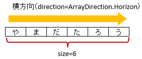
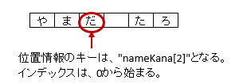

-
@Target(value={METHOD,FIELD}) @Retention(value=RUNTIME) @Documented @XlsFieldProcessor(value={}) public @interface XlsArrayCells
連続し隣接するセルをCollection(List, Set)または配列にマッピングします。基本的な使い方
セルの開始位置をインデックス形式の
column()とrow()か、アドレス形式のaddress()のどちらか一方の形式を指定します。 両方を指定した場合、address()の設定値が優先されます。属性
direction()で、連続する隣接するセルの方向を指定します。属性
size()で、マッピングするセルの個数を指定します。配列または、
Collection(List/Set)にマッピングします。Collection型のインタフェースを指定している場合、読み込み時のインスタンスは次のクラスが指定されます。Listの場合、ArrayListがインスタンスのクラスとなります。Setの場合、LinkedHashSetがインスタンスのクラスとなります。
@XlsSheet(name="Users") public class SampleSheet { // インデックス形式、横方向で指定する場合 // 属性directionを省略した場合は、ArrayDirection.Horizonを指定したと同じ意味。 @XlsArrayCells(column=0, row=0, size=6) private List<String> nameKanas1; // アドレス形式、配列にマッピング @XlsArrayCells(address="A1", size=6, direction=ArrayDirection.Vertical) private String[] nameKanas2; }基本的な使い方
書き込み時に配列・リストのサイズが不足、または余分である場合
アノテーションXlsArrayOptionを指定することで、書き込み時のセルの制御を指定することができます。属性
XlsArrayOption.overOpration()で、書き込み時にJavaオブジェクトの配列・リストのサイズに対して、属性size()の値が小さく、足りない場合の操作を指定します。属性
XlsArrayOption.remainedOperation()で、書き込み時にJavaオブジェクトの配列・リストのサイズに対して、属性size()の値が大きく、余っている場合の操作を指定します。@XlsSheet(name="Users") public class SampleSheet { @XlsArrayCells(address="B3", size=6) @XlsArrayOption(overOperation=OverOperation.Error, remainedOperation=RemainedOperation.Clear) private List<String> nameKana; }書き込み時の制御を行う場合
位置情報／見出し情報を取得する際の注意事項
マッピング対象のセルのアドレスを取得する際に、フィールドMap<String, CellPosition> positionsを定義しておけば、 自動的にアドレスがマッピングされます。
通常は、キーにはプロパティ名が記述（フィールドの場合はフィールド名）が入ります。
アノテーションXlsArrayCellsでマッピングしたセルのキーは、<プロパティ名>[<インデックス>]の形式になります。同様に、マッピング対象の見出しを取得する、フィールドMap<String, String> labelsへのアクセスも、 キーは<プロパティ名>[<インデックス>]の形式になります。
public class SampleRecord { // 位置情報 private Map<String, CellPosition> positions; // 見出し情報 private Map<String, String> labels; @XlsArrayCells(address="B3", size=6) private List<String> nameKana; } // 位置情報・見出し情報へのアクセス SampleRecord record = ...; CellPosition position = record.positions.get("nameKana[2]"); String label = recrod.labeles.get("nameKana[2]");位置情報・見出し情報の取得
- 導入されたバージョン:
- 2.0
- 作成者:
- T.TSUCHIE
-
-
必須要素のサマリー
必須要素 修飾子とタイプ 必須要素と説明 intsize連続するセルの個数を指定します。
-
任意要素のサマリー
任意要素 修飾子とタイプ 任意要素と説明 Stringaddressセルのアドレスを指定します。ProcessCase[]cases適用するケースを指定します。intcolumnセルの列番号を指定します。ArrayDirectiondirection連続し隣接するセルの方向を指定します。Class<?>elementClass配列またはリスト要素の値のクラスを指定します。booleanelementMerged値のセルの結合を考慮するかどうか指定します。introwセルの行番号を指定します。
-
-
-
-
elementMerged
public abstract boolean elementMerged
値のセルの結合を考慮するかどうか指定します。 この値により、属性size()の指定方法が変わります。セル結合されている場合は、結合後の個数を指定します。
- trueの場合は、結合されているセルを1つのセルとしてマッピングします。
- falseの場合は、結合されていても解除した状態と同じマッピング結果となります。
ただし、書き込む際には、結合が解除されます。
@XlsSheet(name="Users") public class SampleSheet { // elementMerged=trueは初期値なので、省略可 @XlsArrayCells(address="B3", size=3) private List<String> words; }結合したセルをマッピングする場合
- 戻り値:
- trueの場合、値のセルが結合されていることを考慮します。
- デフォルト:
- true
-
-
-
direction
public abstract ArrayDirection direction
連続し隣接するセルの方向を指定します。@XlsSheet(name="Users") public class SampleSheet { // 縦方向の隣接するセル // 属性direction=ArrayDirection.Verticalを指定すると、縦方向にマッピングします。 @XlsLabelledArrayCells((address="B3", direction=ArrayDirection.Vertical, size=4) private List<String> names; }
属性directionの概要
- 戻り値:
- セルの方向を指定します。
- デフォルト:
- com.gh.mygreen.xlsmapper.annotation.ArrayDirection.Horizon
-
-
-
elementClass
public abstract Class<?> elementClass
配列またはリスト要素の値のクラスを指定します。省略した場合、定義されたGenericsタイプから取得します。
- 戻り値:
- 要素のクラスタイプを指定します。
- デフォルト:
- java.lang.Object.class
-
-
-
row
public abstract int row
セルの行番号を指定します。column()属性とセットで指定します。- 戻り値:
- 値は0から始まります。-1以下の負の値は無視されます。
- デフォルト:
- -1
-
-
-
column
public abstract int column
セルの列番号を指定します。row()属性とセットで指定します。- 戻り値:
- 値は0から始まります。-1以下の負の値は無視されます。
- デフォルト:
- -1
-
-
-
address
public abstract String address
- 戻り値:
- 'A1'の形式で指定します。空文字は無視されます。
- デフォルト:
- ""
-
-
-
cases
public abstract ProcessCase[] cases
適用するケースを指定します。- 戻り値:
- 何も指定しない場合は全てのケースに適用されます。
- デフォルト:
- {}
-
-